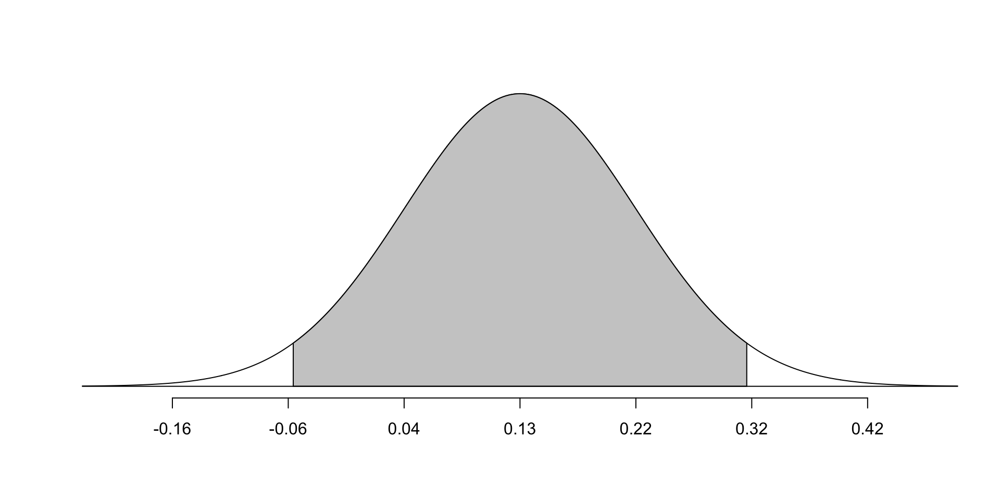
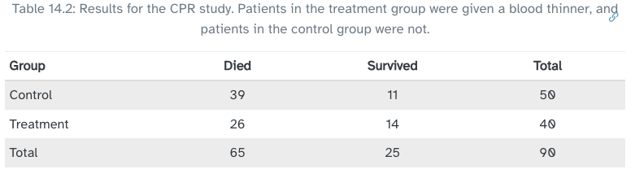
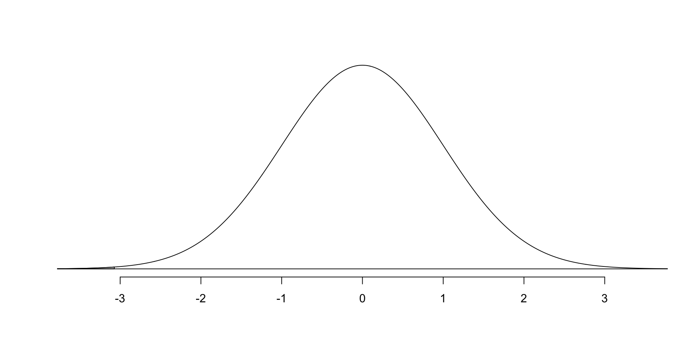

openintro::normTail(m=.13, s=.095, M= c(-.056, .316))
Chapter 17
Patients who received CPR (cardiopulmonary resuscitation) after a heart attack were randomly divided into two groups. The treatment group was given a blood thinner, the control group was given none. Did the blood thinner meaningfully impact survival rates (over 24 hours)?
Can we use a normal distribution to model this situation? We must check CLT conditions for both groups: treatment and control.

Build a 95% confidence interval for the survival rate difference between these two groups.
\[ \hat{p}_T - \hat{p}_C = \frac{14}{40} - \frac{11}{50} = .35 - .22 = .13 \] What does it mean that the difference in proportions is positive?
NEW! Standard error calculation now also involves both groups: \[ \begin{align} SE &= \sqrt{ \frac{\hat{p}_1(1-\hat{p}_1)}{n_1} + \frac{\hat{p}_2(1-\hat{p}_2)}{n_2} }\\ {~~~~~~~} &= \sqrt{ \frac{.35(1-.35)}{40} + \frac{.22(1-.22)}{50} } \\ &= .095496 \end{align} \]
We found \(\hat{p}_T - \hat{p}_C = .13\) and SE = .095
\[
\begin{align}
\textrm{CI} &= \textrm{point estimate} \pm \textrm{margin of error}\\
&= \textrm{point estimate} \pm \, z^* \cdot SE \\
&= .13 \pm 1.96(.095) \\
&= .13 \pm .1862 \\
&= (-.0562, .3162)
\end{align}
\] Where did this \(z^*\) come from?
Interpret what this interval tells us.
A five-year experiment was conducted to evaluate the effectiveness of n-3 fatty acid supplements (fish oils) on reducing heart attacks.
| heart attack | no event | Total | |
|---|---|---|---|
| fish oil | 145 | 12788 | 12933 |
| placebo | 200 | 12738 | 12938 |
We’re interested in the difference of two proportions
\[\hat{p}_{1} = \frac{145}{12933} = 0.0112\] \[\hat{p}_{2} = \frac{200}{12938} = 0.0155\] \[ \hat{p}_{1} - \hat{p}_{2} = 0.0112-0.0155 = -0.0043 \] Is this observed difference significant? Or is it the result of random variation?
Null hypothesis: there is no difference between the two groups \[ H_0: p_1 - p_2 = 0 \]
Alternative hypothesis: patients that took the fish oil supplement had a reduced rate of heart attack \[ H_A: p_1 - p_2 < 0 \]
Special case: when \(H_0\) is that the proportions are equal, we use a pooled proportion to check conditions and find SE.
Independent? Yes, this was a randomized study
Large enough sample size? Use pooled proportion.
\[ \begin{align} \hat{p}_{\mbox{pool}} = \frac{ \mbox{number of successes}}{\mbox{number of cases}} &=\frac{\hat{p}_1 n_1 + \hat{p}_2 n_2}{n_1 + n_2}\\ &= \frac{145 + 200}{25871} \end{align} \]
\[ \hat{p}_{\mbox{pool}} = 0.0133 \]
Use pooled proportion \(\hat{p}_\mbox{pool}\) written simply as \(\hat{p}\)
In this example,
For difference of two proportions, we use our new formula with the pooled proportion for both groups
\[ SE = \sqrt{ \frac{\hat{p}_1(1-\hat{p}_1)}{n_1} + \frac{\hat{p}_2(1-\hat{p}_2)}{n_2} }\\ = \sqrt{ \hat{p}(1- \hat{p}) \left ( \frac{1}{n_1} + \frac{1}{n_2} \right ) } \] \[ \begin{align} SE &= \sqrt{ 0.0133(1-0.0133)\left ( \frac{1}{12933} + \frac{1}{12938} \right )} \\ &= 0.0014 \end{align} \]
\[ \begin{align} Z = \frac{ (\hat{p}_1 - \hat{p}_2)}{ SE} &= \frac{ (\hat{p}_1 - \hat{p}_2)}{ \sqrt{ \hat{p}(1- \hat{p}) \left ( \frac{1}{n_1} + \frac{1}{n_2} \right ) }} \\ &= \frac{ -0.0043}{0.0014} \\ &= -3.071 \end{align} \]
How unlikely is it to observe a Z-score of -3.071, or more extreme?

Since the p-value of 0.001 is less than discernment level \(\alpha = 0.05\), we conclude that we have evidence to reject the null hypothesis. It appears that the observed difference is significant suggesting that fish oil supplements do decrease incidents of heart attacks.